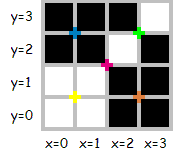

Project Euler 287
题目
Quadtree encoding (a simple compression algorithm)
The quadtree encoding allows us to describe a \(2^N\times 2^N\) black and white image as a sequence of bits (0 and 1). Those sequences are to be read from left to right like this:
- the first bit deals with the complete \(2^N\times 2^N\) region; “0” denotes a split:
- the current \(2^n\times 2^n\) region is divided into 4 sub-regions of dimension \(2^{n-1}\times 2^{n-1}\), the next bits contains the description of the top left, top right, bottom left and bottom right sub-regions - in that order;
- “10” indicates that the current region contains only black pixels;
- “11” indicates that the current region contains only white pixels. Consider the following \(4\times 4\) image (colored marks denote places where a split can occur):

This image can be described by several sequences, for example: “001010101001011111011010101010”, of length \(30\), or “0100101111101110”, of length \(16\), which is the minimal sequence for this image.
For a positive integer \(N\), define \(D_N\) as the \(2^N\times 2^N\) image with the following coloring scheme:
- the pixel with coordinates \(x = 0, y = 0\) corresponds to the bottom left pixel,
- if \((x-2^{N-1})^2 + (y-2^{N-1})^2 \leq 2^{2N-2}\) then the pixel is black,
- otherwise the pixel is white.
What is the length of the minimal sequence describing \(D_{24}\) ?
解决方案
以\(N=4\)为例，打印出来的图像是这个样子的（已经均分成四块，并且额外多打印了一行和一列）：
1 | 00000000 10000000 0 |
假设左上角为\((0,0)\)坐标。可以发现这个图形是一个圆。并且，不难证明这个图形是关于\(y=x\)这条直线对称的。因此我们一开始只需要对其中的\(3\)块进行计算。
我们考虑对将右下角的图形对称操作，从而得到和另外三部分完全相同的图形。
令\(x_0=2^{N-1},y_0=2^{N-1}\)，那么右下方的图形就是以点\((x_0,y_0)\)为左上角的边长为\(2^{N-1}\)的正方形。左下方的图形就相当于以点\((x_0+1,y_0)\)为左上角的正方形垂直对称得到。左上角的图形就相当于以点\((x_0+1,y_0+1)\)为左上角的正方形旋转\(180°\)得到。
将左上方和左下方截取出来和右下方根据\((x_0+1,y_0+1),(x_0+1,y_0)\)截取出来对比的效果：
1 | 11111111 1111111 1 |
因此我们只关注右下方这一部分的圆（只是位置不同），最终将编码的长度相加起来即可。
代码
1 |
|